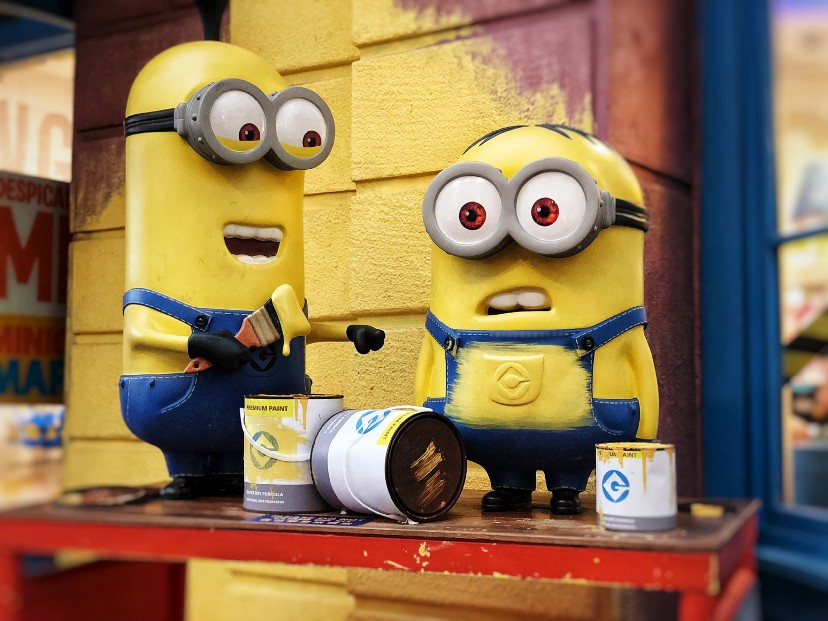

This article is originally posted on medium, link is given below.
DATA SCIENCE — A NEW ERA

Photo by Justin Lim on Unsplash
When you are not sure from where to start then start from the very beginning …
What is Science?
This is very simple question to ask but difficult to answer because we all have our own definitions and all are correct. Science is a field which enlighten the dark and hidden fact with it’s systematics process. It provides a way to understand the problem and motivates us to find it’s solution through experiments and observations.
It’s a way of learning new knowledge with the experiments and hypothesis which helps us to understand the world with various dimensions.
Branches of Science:
There are three main branches of science which are as follows:
Physical Science: This branch deals with Non-living materials, Natural laws and energy.
Life Science: This branch deals with living bodies present on the earth.
Earth Science: As name says, this is the study of earth and space.
What is Data-Science?
Data science is a field which deals with the data. It is a study to extract meaningful insights from the data which can be used further to enhance the performance of our business processes and day to day activities.
Now a days, we are flooded with the data. It is a big challenge for the industries to collect and store the data properly. Data science provides us a systematic way to understand the data, to extract meaningful insights out of it and use this knowledge to resolve business problems.
Data Science is the combination of multiple disciplines like mathematics, statistics, computer science and the domain knowledge etc..
Let’s consider one scenario that you are an owner of company and you need to take critical decisions for your business. Earlier, it was only experience and statistics, which help stake holders to take decisions but now, with the help of data science we can understand the pattern of the previous year’s data and predict the possibilities for the future.
Data science is not only helping us taking decisions but also to enhance our working capabilities, our medical industries, manufacturing industries. data science is even helpful for an ordinary people to get benefits on their day to day activities.
Data science life cycle:
Data Science is very vast field which contains descriptive analysis, predictive analysis, prescriptive analysis and many more. Descriptive analysis means describing the data in various aspects. It includes understanding the data, exploring it and getting meaningful insights from it. predictive analysis includes prediction for the future. It takes historical data, understand it’s pattern and provide prediction for the future.
prescriptive analysis is nothing but providing an advise or suggestion along with the prediction so that anyone can understand prediction better and use it properly.
Data Science has its own pre-defined life cycle which handle all it’s processes in a very systematics way. Life cycle contains various steps. we can have different steps in life cycle but overall, we all follow similar procedure. Data science life cycle can be seen below:
Understanding of Business Problem
Data Gathering
Data Processing
Exploratory Data Analysis
Data Modeling
Model Deployment
This is very important for every data scientist to know about data science life cycle. We will discuss in details about data science life cycle in the next article.
Difference between data science and data scientist
As we have seen above, Data Science is a discipline which deals with the data and a person who works on this discipline called data scientist. Data scientist follow data science life cycle, it is not required for him to get involved directly in all steps because data engineers and data analyst will also be working with data scientist.
Data scientist, data analyst and data engineer closely work together because their area of expertise overlaps together. we should not think data scientist as a core scientist who wears white coat and work on labs.
Photo by Kaleidico on Unsplash
Data scientist should also be able to handle following task:
- Data scientist should understand business problem and requirement.
- Data scientist should be able to extract data from the source and perform data processing and data cleaning.
- Data scientist should have good understanding of data.
- Data scientist should have good understanding of data science life cycle.
- Data scientist should be able to extract meaningful insights from the prediction.
Conclusion:
Now a days, everyone is looking towards data science because of its magical results but we should also understand the limitations of the data science. Model prediction depends on the data which is used for training. If the data, used for model training is not correct or biased, model prediction can not be trustworthy. We should have a proper understanding of the data before going training a model.
We should understand criticality of each problem and acceptable margin of the model so that model performance can be judged properly and we can use these magical tools responsibly.
At the end, I wanted to thank all of you.
Stay tuned..! Keep the data flowing……! See you in the next article….
References:
https://aws.amazon.com/what-is/data-science/
https://www.ibm.com/topics/data-science
https://www.datarobot.com/wiki/data-science/
https://www.science.org.au/curious/people-medicine/what-science
https://leverageedu.com/blog/branches-of-science/
https://www.indeed.com/career-advice/career-development/branches-of-science
https://coursementor.com/blog/types-of-science/
https://mustafaserdarkonca.medium.com/data-science-life-cycle-e4d74afe4bf5